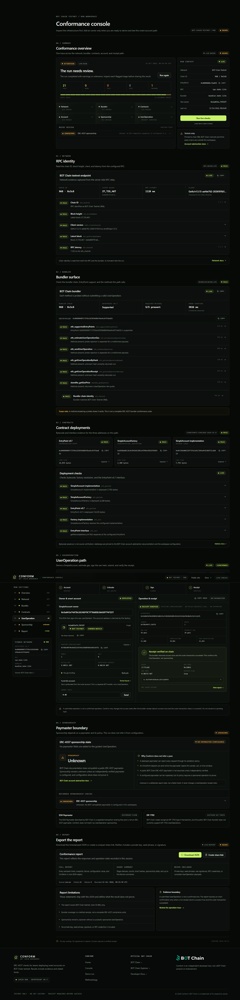

BOT Chain Testnet · ERC-4337
Conform
A conformance workbench for account abstraction stacks. Probe the network, bundler, contracts and account — then prove a UserOperation end to end.
“A submitted operation is not a confirmed operation.”
The problem
Account abstraction fails in pieces.
- EntryPoint, factory and implementation drift silently across deployments.
- Bundlers omit methods, miscalculate verification gas, or reject estimates they just returned.
- Counterfactual accounts break gas estimation until someone remembers to prefund them.
- Receipts end in a hash — with no explanation of which layer actually failed.
Today’s workflow is paste-and-pray: explorer tabs, bundler logs, ad-hoc scripts — redone from scratch for every chain and every stack change.
The solution
One page. Five stages. Twenty-two checks.
Network
Bundler
Contracts
Account
UserOperation
- Live probes: chain ID, client version, latency; bundler method surface and EntryPoint support.
- Bytecode-verified contracts: EntryPoint v0.7, SimpleAccountFactory, implementation lookup.
- SimpleAccount derivation from the owner EOA, funding state, EntryPoint nonce.
- Full path: estimate → sign the raw userOpHash → submit → verify the receipt.
- Sponsorship is reported honestly: unknown until a verified paymaster proves otherwise.
How it works
Keys stay in the wallet. Evidence comes from the chain.
BrowserNext.js console. Never receives keys. Injected wallet signs the raw hash via personal_sign; signature stays in memory.
→
Same-origin relays/api/rpc & /api/bundler: method allowlists, 64 KB body cap, 180 req/min, 20 s / 30 s upstream timeouts.
→
BOT Chain testnetrpc.bohr.life · bundler.bohr.life · EntryPoint v0.7 · SimpleAccountFactory.
Receipt rule: success = bundler receipt success: true AND outer transaction status 0x1.
Pure TypeScript core in packages/chain (viem + Zod) — derivation, diagnostics, hashing and reporting, testable without a browser (19 unit tests).
Evidence model
Three rules the UI cannot break.
1 — Submitted ≠ confirmed. A bundler hash is a lead, not a result. Success requires inner success=true and outer status 0x1.
2 — Sponsorship is unknown until proven. A configured paymaster proves nothing; only a real sponsored UserOperation does.
3 — Reports never carry secrets. No keys, seed phrases, signatures or raw payloads in reports or share links. /report is noindex; demo mode never connects, signs or broadcasts.
Proof · live testnet run
Headless end-to-end, receipts verified.
21
Pass
0
Fail
1
Unknown · sponsorship
2
UserOps on chain
- Full UI flow driven in Chrome: connect → derive → sign → submit → receipt verified.
- Relay guards exercised: cross-origin 403, bad method 403, oversized 413, GET 405.
- Zero console errors; report export & share link contain no secrets.
- 22 Oct 2026 — run reproduced by the checked-in E2E harness.
localhost:3001/console — live, receipt verified

On-chain interaction records
Wallet explorer links — verify everything yourself.
| Interaction | Transaction | Block | Gas used | Result |
|---|---|---|---|---|
| SimpleAccount deployment | 0xce8c0c20…b2995 | 27,678,217 | 275,279 | 0x1 · success |
| Conformance UserOperation | 0x3769fc03…58d7d | 27,735,482 | 87,757 | 0x1 · success |
BOT Chain Testnet (chain 968). Both operations ran without a paymaster; gas prefunded from the smart account. Receipts re-verified over RPC.
Security & stack
Hardened by default, boring on purpose.
Security posture
- No key custody: the wallet signs; the signature never leaves browser memory.
- Relays allowlist methods — read-only RPC, bundler methods for the UserOp path only.
- Sanitized error text; reports exclude keys, signatures and raw payloads.
- Demo mode never connects, signs or broadcasts.
Stack
- Next.js 16 · React 19 · TypeScript 5.9 · Tailwind 4.
- viem · Zod · Vitest — pure-TS core, typed end to end.
- Monorepo: apps/web UI + relays, packages/chain logic, packages/ui components.
- Vercel-ready: root directory apps/web, zero env vars required.
Limitations & roadmap
Honest about what it proves.
Today
- BOT Chain testnet only; pinned to chain 968.
- Bundler checks are a sampled method matrix, not full compliance.
- Sponsorship unproven without a real paymaster operation.
- EOA paymaster and EIP-7702 flows out of scope.
Next
- Verified paymaster flows with real sponsored UserOperations.
- EIP-7702 delegation path on the same receipt discipline.
- Multi-bundler matrix and scheduled E2E runs in CI.
- Mainnet profile once BOT Chain mainnet endpoints stabilize.
Run it
Verify everything. Trust receipts.
npm install && npm run dev → localhost:3000/console · add ?demo=1 for labelled sample evidence
Conform is a BOT Chain testnet workbench for ERC-4337 conformance. Testnet only. No keys, no custody, no claims without receipts.